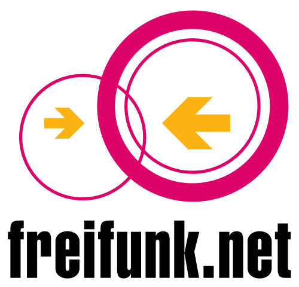

Out of Altruism or Because it Reads Well on the CV?
The Motivations for Participation in the Freifunk Community Compared to FLOSS
Lyudmila Vaseva (vaseva@mi.fu-berlin.de)
March 2013
- 
Community Networks
- free, decentralised communication infrastructure set up and managed by its users
- free firmware
- free access to the network for everyone with a wifi capable device
- information is passed along without tampering or prioritising
August 2016
Why?
Alexander Hars and Shaosong Ou, "Working for Free? Motivations for Participating in Open-Source Projects", Int. J. Electron. Commerce, 6(3):25–39, 2002.
Karim Lakhani and Robert Wolf, "Why Hackers Do What They Do: Understanding Motivation in Free/Open Source Software Projects", MIT Press, Cambridge, 2005.
Methods
- semi-structured interviews
- questions inspired by floss papers
- 16 participants
- raw data: https://github.com/lusy/motivationFF/blob/master/ff_umfrage
Organisation of the findings

Richard M. Ryan and Edward L. Deci, "Intrinsic and extrinsic motivations: Classic definitions and new directions", Contemporary Educational Psychology, 25:54–67, 2000.
Extrinsic Motivation: expectation of a future reward
- no monetary compensation FLOSS Hars and Ou(2002): 30%; Lakhani and Wolf(2005): 40%
- not seen as networking/visibility platform FLOSS Hars and Ou(2002): 36.7%; Lakhani and Wolf(2005): 17.5%
- polish technical skills, learn about (wifi mesh) networks (6 of 16 people) FLOSS Hars and Ou(2002): 88%; Lakhani and Wolf(2005): 41.3%
“learnt a lot about network technology (there's scarcely another free time project where you can learn so much about it)”
\(\rightarrow\) byproduct, not a primary source of motivation
Extrinsic Motivation: satisfying (personal) needs
- FLOSS: Hars and Ou(2002): 38%; Lakhani and Wolf(2005): 58.7%
- Before 2008:
“There was no (usable) Internet in Friedrichshain in 2003”
(2 out of 16 people) - After:
“share the own Internet connection with people who need it! (today, primarily refugees)”
(6 out of 16 people)
Extrinsic Motivation: expected approval from self or others
- FLOSS: Hars and Ou(2002): 43%; Lakhani and Wolf(2005): 11%
- 2 out of 16 people
“it's cool to have the feeling that people need you”
“you can see that people use it (refugees; students; positive feedback)”
Extrinsic Motivation: feeling as a part of a community
- 8 out of 16 people
“building a project together with others”
“I've grown to love the community”
“collaborating with and getting to know people of different ages and backgrounds, which would have hardly happened in a different setting”
“one gets to know interesting and different people, comes out of one's comfort zone and social bubble”
- the intersection of community and technology: the most interesting part of the Freifunk project
- FLOSS: Hars and Ou(2002): 27.8%; Lakhani and Wolf(2005): 83%
Extrinsic Motivation: ideology
- FLOSS: Hars and Ou(2002): n/a; Lakhani and Wolf(2005): 33.1%
- 16 out of 16 people
“free, decentralised communication infrastructure built and managed by the people who use it and not by the state or business players”
“independent network, cannot be switched off by a single person”
\(\rightarrow\) political aspect plays a very central role
Intrinsic Motivation
- FLOSS: Hars and Ou(2002): 79.7%; Lakhani and Wolf(2005): 44.9%
- technically interesting/challenging (14 out of 16 people)
“there's stuff you can physically touch (more tangible compared to coding), it makes you happy :)”
“you can climb on church towers and look at the city from above, which is pretty cool :)”
“it's technically challenging despite the fact that I've abandoned the idea that it could be an alternative to the last mile of the German Telekom”
“challenge: to get maximal results with minimal resources”
Summing up
- ideology is important motive for everyone in Freifunk
- differences in the motivations to join in different "generations" (pre/post 2008)
Further research
- wide palette of motivations - further research would be insightful
- evolve motivations over time? - diverse project, many different aspects, keeping long time contributors possible
- asking more people and more elaborate questions would be interesting
- comparison between different projects would be even more interesting
Thank you!
https://github.com/lusy/motivationFF
License
These slides are under the by-sa Creative Commons License.